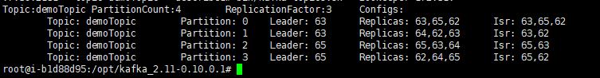
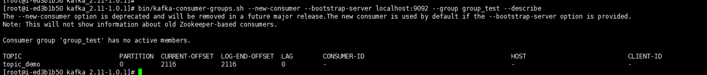

常用的命令汇总
Topic
新建Topic
1
| bin/kafka-topics.sh --zookeeper <zookeeper connect> --create --topic <string> --replication-factor <integer> --partitions <integer>
|
删除Topic
1
| bin/kafka-topics.sh --zookeeper <zookeeper connect> --delete --topic <string>
|
查看Topic列表
1
| bin/kafka-topics.sh --zookeeper <zookeeper connect> --list
|
查看所有Topic的详细信息
1
| bin/kafka-topics.sh --zookeeper <zookeeper connect> --describe
|
增加Partition个数
1
| bin/kafka-topics.sh --zookeeper <zookeeper connect> --alter --topic <string> --partitions <integer>
|
查看指定Topic的详细信息
1
| bin/kafka-topics.sh --zookeeper <zookeeper connect> --describe --topic <string>
|
相比于上一条查看所有topic的信息命令，查看指定topic的信息具有更切实的实际作用，更有利于在实际工作中快速定位和发现问题(推荐使用)。通过该命令可以查看给定Topic的分区、副本集个数；以及各分区、副本集的实际分布情况，同时还可以看到每个分区的ISR列表信息(有关ISR介绍可详见ISR)。通过该命令可以根据各Partition的ISR情况分析Broker状况。执行结果如下所示

查看副本集同步出现异常的分区
1
| bin/kafka-topics.sh --zookeeper <zookeeper connect> --describe --under-replicated-partitions
|
查看缺失leader的分区
1
| bin/kafka-topics.sh --zookeeper <zookeeper connect> --describe --unavailable-partitions
|
查看Topic各Partition的offset极值
1
| bin/kafka-run-class.sh kafka.tools.GetOffsetShell --broker-list <address:port> --topic <string> --time <param>
|
time参数详解
-1：查看Partition的最大Offset，即就是latest
-2：查看Partition的最小Offset，即就是earlist
timestamp：查询指定时间戳以后的所有消息中最早的一条消息的offset值；Eg：1546272000000
Consumer Group
因为Consumer的版本有新旧之分，且旧版本(Scala)的Consumer Client是依赖于Zookeeper来保存Offset的，而新版本(Java)的则基于内置的topic(__consumer_offsets )来保存offset，所以在使用Group相关命令时，必须根据实际情况确定Consumer的版本，即就是：旧版本的查询只需要指定Zookeeper参数即可，而新版本的查询需要指定–new-consumer参数的同时，指定bootstrap-server参数
查看Group列表
1
| bin/kafka-consumer-groups.sh --new-consumer --bootstrap-server <address:port> --list
|
查看指定Group下各Topic对应Partition的实际消费情况
1
| bin/kafka-consumer-groups.sh --new-consumer --bootstrap-server <address:port> --group <name> --describe
|
通过该命令可以了解到给定Group下每个Topic各Partition的最大Offset值，当前所处的消费位置；还显示出当前Partition所操作的客户端信息，LAG表示消费滞后的情况；执行结果如下所示：

Console Option
控制台消费数据
旧版本消费
1
| bin/kafka-console-consumer.sh --zookeeper <zookeeper connect> --topic <string> --from-beginning
|
新版本消费
1
| bin/kafka-console-consumer.sh --bootstrap-server <address:port> --topic <string> --from-beginning
|
控制台生产数据
1
| bin/kafka-console-producer.sh --broker-list <address:port> --topic <string>
|


 Home
Archives
Tags
About
Search
Home
Archives
Tags
About
Search